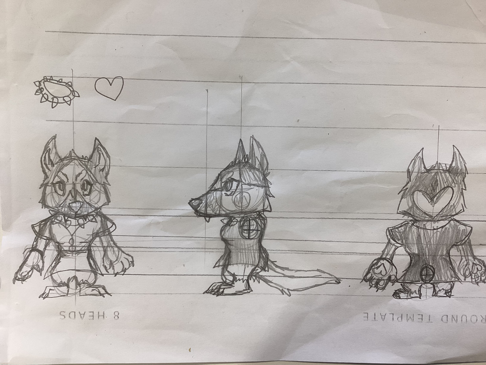

I have made a threepoint turnaround of my character for my game. It is original and has a feel good aesthetic. It includes a head, torso, legs and a tail. It the first design and will need future improvements.
Q: Do you think this is appealing to an audience of the age 9-14?
A: Yes because it is very cute and will probably attract kids attention with it's chibi-like design.
A: Yes I defintely think so because it has a nice dress.
Q: Is there anything you would change in the character's design to make it more appealing to a female audience?
A: No I wouldn't change anything because it is great the way it is.
A: No the desidn itself is appealing to most female audiences I'd assume.
To think that I was considering a lot of changes that needed to be done was almost wrong, my feedback is suggesting that I don't need to and it is really good the way it is. So I have decided to keep it the way it is. I think furthermore into the future I will make more subtle changes when moddelling so it doesn't look as messy as the sketch is.